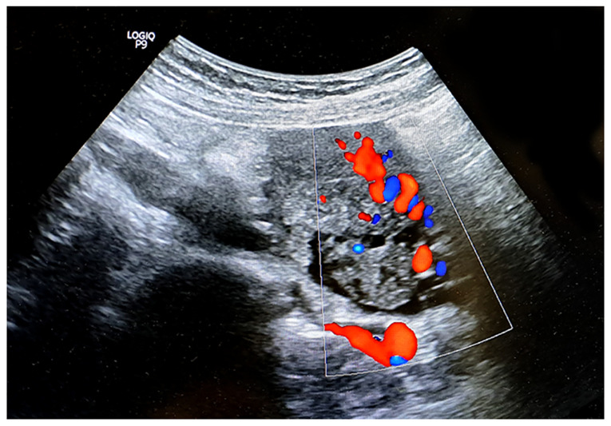

Ficha del catálogo
Torsión ovárica
- Sistema
- Reproductor
- Modalidad
- US
- Región
- Pelvis femenina, ovario y anexos
- Dificultad
- Avanzado
Consiste en la rotación del ovario y con frecuencia de la trompa sobre su pedículo vascular, lo que compromete primero el drenaje venoso y linfático y después el aporte arterial. Se presenta con dolor pélvico agudo de inicio brusco, náuseas y vómitos, con frecuencia en presencia de una masa anexial que actúa como punto de giro. Es una urgencia quirúrgica porque la demora conduce a la pérdida del ovario.
Técnica
El ultrasonido transvaginal complementado con abordaje transabdominal es la exploración inicial y suele bastar para la sospecha diagnóstica. El Doppler color y espectral se emplean para valorar el pedículo y la perfusión, aunque su resultado nunca descarta la torsión por sí solo. La tomografía o la resonancia ayudan cuando el cuadro es dudoso o el diagnóstico diferencial abdominal es amplio.
Qué observar
- Ovario aumentado de tamaño de forma unilateral respecto al contralateral
- Estroma ovárico edematoso e hipoecoico con folículos desplazados a la periferia
- Masa anexial que actúa como punto de rotación, con frecuencia un teratoma o un quiste
- Pedículo vascular retorcido con aspecto de remolino en el Doppler
- Posición anómala del ovario, desplazado hacia la línea media o hacia arriba
- Escaso líquido libre en el fondo de saco y ausencia de flujo venoso intraovárico
Hallazgos
El signo más constante es el ovario agrandado y edematoso con los folículos empujados hacia la periferia por el estroma congestivo. La identificación del pedículo enrollado, con vasos que giran en espiral, es el hallazgo más específico y debe buscarse de forma dirigida entre el útero y el ovario afectado. La presencia de flujo arterial no excluye el diagnóstico, ya que la doble irrigación del ovario y la torsión intermitente permiten que la perfusión se conserve parcialmente.
Perlas
Un Doppler con flujo presente en un ovario claramente agrandado y doloroso no descarta la torsión y ha sido causa frecuente de retraso quirúrgico. El tamaño asimétrico del ovario y la disposición periférica de los folículos tienen más valor práctico que el estudio del flujo.
Diagnóstico diferencial
- Quiste ovárico hemorrágico
- Muestra un patrón reticular interno con coágulo retráctil y sin aumento global del estroma ni edema.
- Enfermedad inflamatoria pélvica
- Cursa con fiebre, dolor a la movilización cervical y trompa dilatada con pliegues engrosados y flujo aumentado.
- Apendicitis aguda
- Presenta un apéndice engrosado no compresible con infiltración de la grasa vecina y ovario derecho normal.
- Embarazo ectópico
- Existe prueba de embarazo positiva con útero vacío y masa anexial extraovárica o anillo tubárico.
Simuladores
- Ovario poliquístico con múltiples folículos periféricos sin edema estromal
- Quiste funcional grande que oculta el parénquima ovárico normal
- Hidrosálpinx plegado que simula una masa anexial compleja
Por modalidad
- TC
- Muestra un anexo agrandado con desviación uterina hacia el lado afectado e infiltración de la grasa pélvica.
- RM
- Define bien el edema del estroma y la hemorragia intraovárica, útil en gestantes y en casos dudosos.
- US
- Es la técnica inicial, valora el tamaño del ovario, la disposición folicular y el pedículo con Doppler.
Protocolo
Ultrasonido transvaginal con transductor de alta frecuencia y estudio transabdominal complementario con vejiga en repleción moderada, midiendo ambos ovarios en tres dimensiones para comparar volúmenes. Se explora de forma dirigida el trayecto entre el útero y el ovario afectado buscando el pedículo retorcido, con Doppler color de baja velocidad y análisis espectral. Se documenta la presencia de masa anexial subyacente y de líquido libre.
Clasificación
Errores frecuentes
- Descartar el diagnóstico por encontrar flujo arterial conservado
- No medir y comparar el volumen de ambos ovarios
- Omitir la búsqueda dirigida del pedículo vascular retorcido

torsión ovárica urgencia ginecológica edema estromal folículos periféricos pedículo retorcido Doppler reproductor